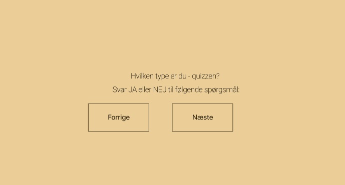
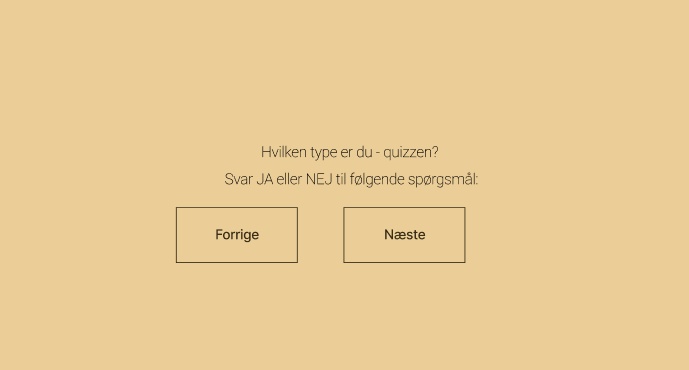

Tag quizzen
Er dit fokus på sund og billig morgenmad i dagligdagen, eller hvad vælger du, når du endeligt vælger at spise morgenmad?
Quiz-tid! Er du den selvbevidste type? Kan du føle dig doven? Er du altid meget motiveret? Eller føler du, at du er en helt andet morgenmadstype-person? Tag min quiz og find ud af det!

Er dit fokus på sund og billig morgenmad i dagligdagen, eller hvad vælger du, når du endeligt vælger at spise morgenmad?
Hvilken type er du?

Den selvbevidste vælger hurtig og sund morgenmad, der også signalerer en bevidst og moderne livsstil.

Den dovne vælger den nemmeste løsning og spiser morgenmad uden at bruge tid eller energi på det.

Den motiverede prioriterer nærende morgenmad, der giver energi til at nå sine mål.

Livsnyderen forkæler sig selv med lækker og hyggelig morgenmad, hvor nydelsen er i centrum.